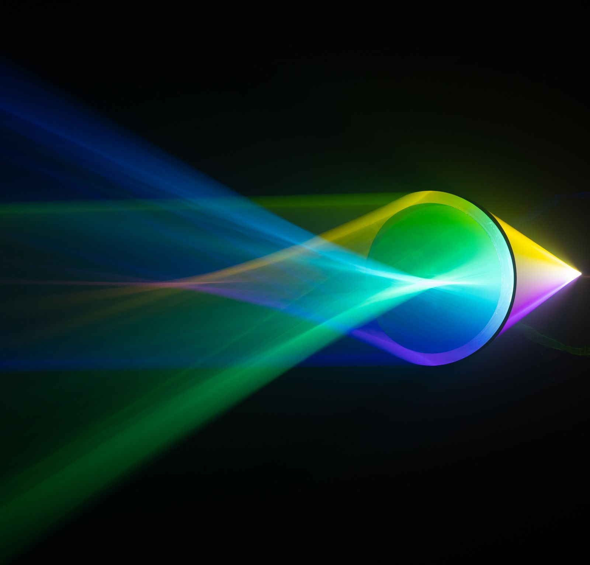

Precision Optical Coatings for Laser & Quantum Systems
Atomic-layer control for researchers operating at the limits of optical loss. Engineered for high-power lasers, ultra-low-loss mirrors and complex bandpass interference stacks.

Precise control of optical thin films, from mirror to filter.
Advanced photonics research increasingly depends on precise control of optical thin films, from ultra-low-loss laser mirrors to complex multilayer filters.
i-Photonics develops high-precision coating systems based on Ion Beam Sputtering (IBS) and Plasma Assisted Reactive Magnetron Sputtering (PARMS) for laboratories working in laser science, quantum optics, spectroscopy, imaging, sensing and advanced photonics. Dymek brings these systems to research labs across Southeast Asia.
Research applications
High-precision IBS and PARMS platforms configured to deliver atomic-scale layer control for rigorous optical demands.


Core deposition technologies

IBS for low-loss, high-precision optics
The Lidiz platform uses Ion Beam Sputtering for dense, stable optical coatings where absorption, scattering, layer accuracy and repeatability are critical.
Optical benchmark: for researchers working at the limits of optical loss, i-Photonics has reported IBS-coated high-reflectivity mirrors with absorption reduced to approximately 6 ppm and reflectance of 99.9966% at 1064 nm, following optical-stack and thermal-process optimisation.
Research reading (2026): “When Every ppm Matters: The Science Behind Low Absorption Optical Coatings”, i-Photonics

PARMS for complex multilayer filters
The Meridian platform combines reactive magnetron sputtering, plasma assistance and in-process optical monitoring for demanding interference coatings.
Technical benchmark: in a 2026 technical example, i-Photonics produced an astronomy-grade [S II] narrowband filter using approximately 170 dielectric layers deposited in a continuous ~48-hour vacuum cycle. The reported result was 93.89% peak transmission with a measured FWHM of approximately 3.1 nm near 673.1 nm.
Research reading (2026): “High-Performance Narrowband Optical Filters: Precision Thin-Film Coatings for Demanding Applications”, i-Photonics
See the LIDIZ in action.
A short film from i-Photonics showing the LIDIZ ion beam sputtering coater. Ask Dymek for a live discussion or a technical datasheet.

LIDIZ IBS coater · film by i-Photonics
Start with the optical requirement.
The right deposition platform depends on your wavelength range, coating design, substrate, optical-loss target, uniformity requirement and research direction. Tell us what you are trying to achieve, not simply what machine you are looking for.
Send your requirement- Optical loss targetsPPM-level absorption and scatter
- Spectral uniformity specsAcross the part and the batch
- Substrate & layer countMaterial, size and stack complexity
- Laser damage thresholdLDT requirements for high-power use